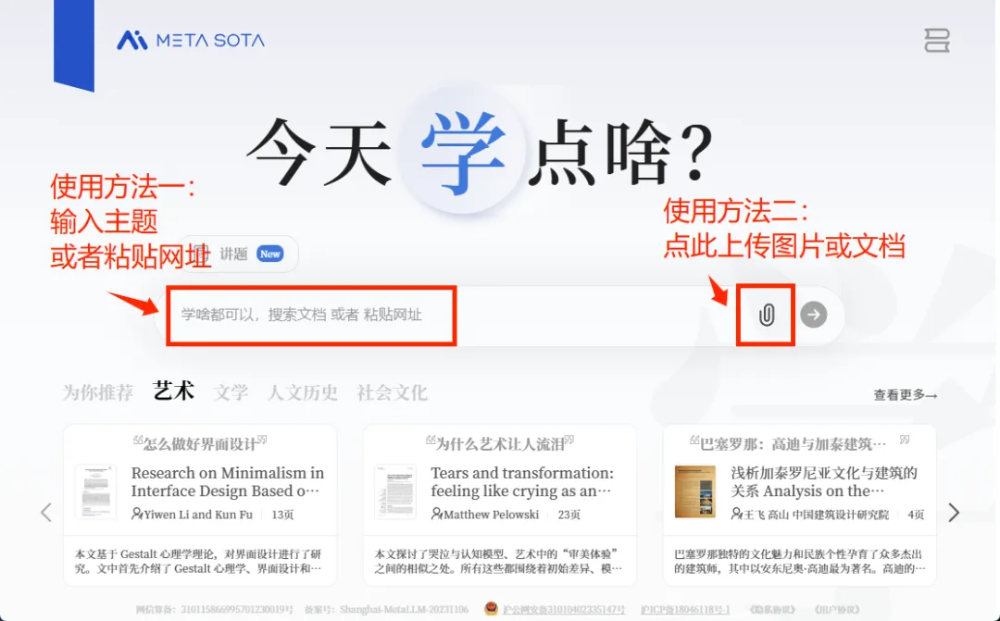
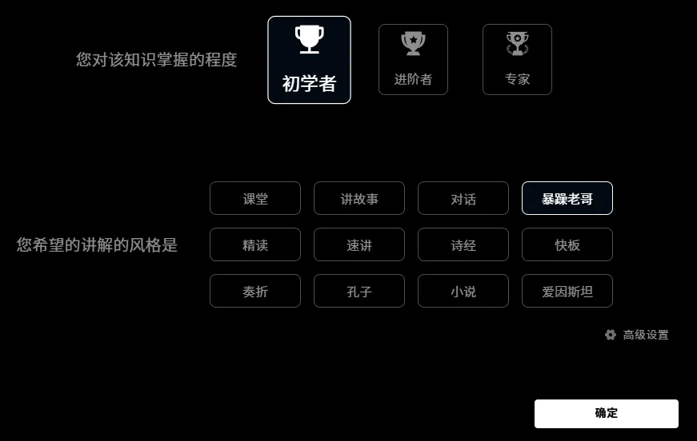
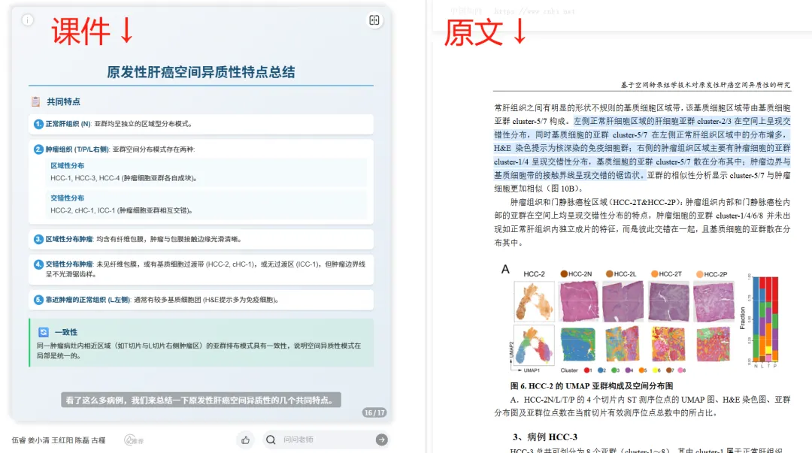
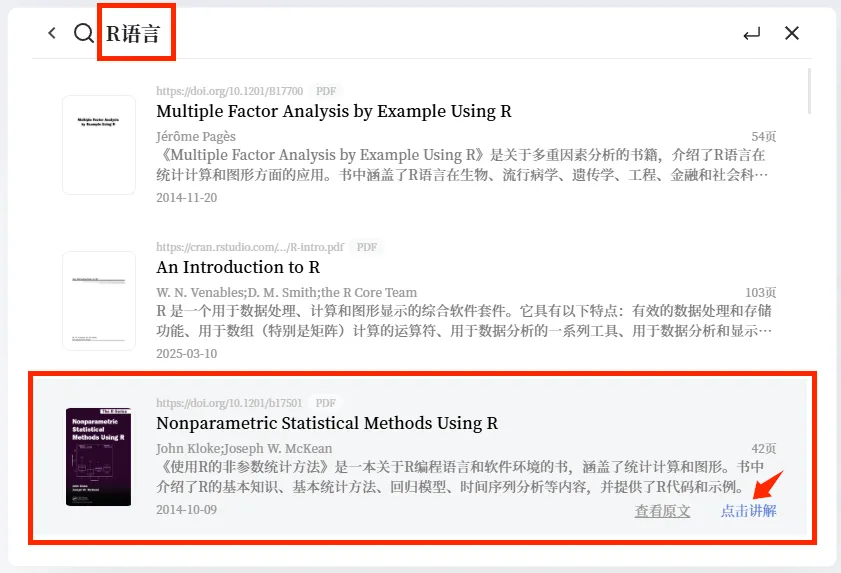

组会文献报告也能"作弊"了！
原文：https://mp.weixin.qq.com/s?__biz=MzAwMzIzOTk5OQ==&mid=2247529122&idx=1&sn=a52717911186ffac90e94937a9e74731&chksm=9b3c0bf2ac4b82e4ddcdcf336cdb9180b1cd53afe4f330929abd8b60f1598c2a2f994aab2aa7#rd 合集：文献速递
阅读大量文献，对每个生信人来说，是必要的，也是要命的。
每次打开一篇新文献，密集的术语、复杂的句式、一页接一页的方法图、数据表……全都扑面而来，读了半天都不知道作者到底想讲什么，简直一个头两个大。
为了解决阅读效率低的问题，也试过不少办法，比如做笔记、画框架图，但效果都一般，多数时候还是得硬啃。几年下来，头都秃了。
偶尔也会想，要是每篇文献能像B站视频那样讲出来，学起来是不是就轻松多了？还能在做家务、通勤时利用碎片时间听一听。
只是，这么大的工程，人哪做得来？
但AI可以。
最近，这事儿还真成了。
新上线的一个AI工具——今天学点啥，真的能把文献一键做成生动有趣的视频课。
它是秘塔AI推出的新产品。他们家的明星产品“秘塔AI搜索”，是市面上最流行的AI搜索工具之一，查文献、解决问题都很方便，连清北教授都在用。
这次的“今天学点啥”，更像是一个“AI老师”。
举个例子
以前不久分享过的海军军医大学的博士论文《基于空间转录组学技术对原发性肝癌空间异质性的研究》为例，论文页数较多，内容也比较深入。
把它直接扔给“今天学点啥”。（metaso.cn/study，手机端也有APP）

很快，界面出现了一些定制选项，可以选择难度、风格、语言、音色。

现在，假设你现在还是一个生信小白，想要读一些文献来扩充知识。这个时候，可以选择“暴躁老哥+初学者”模式。
选完以后，AI老师很快就开始工作了：（由于课程时间太长，这里只截取了部分，给大家看看效果）
“初学者”模式下的内容讲得比较浅显易懂，适合完全不熟悉空间转录组的人来入门。
接下来，再试一种讲解搭配。假设你现在已经对相关技术和背景有所了解，想进一步理解这篇论文的设计和分析方法，可以选择“精读+专家”模式：
这个版本的内容明显更深入，术语和逻辑解释得更系统，适合已经有一定基础的人参考。
PART.2
说下优点
玩了好几天，感觉“今天有点啥”最有意思的一点，是可以根据不同学习阶段自由调整讲解方式。
它提供了多种风格、三种难度模式，基本覆盖了从入门小白到有一定基础的使用者。无论刚接触这个领域，还是已经读过不少文献，都能找到适合自己的讲解方式。相比自己一个字一个字啃文献，跟着视频课学习会快很多，也更容易形成系统的理解。
如果第一次没听懂，还可以换个风格、多听几遍，在不同表达方式之间切换，从多个角度理解同一部分内容，不知不觉就记住了重点。
它还提供“课件+原文对照”的同步显示功能。讲到哪段内容，文献就指到哪段，结构清晰、重点突出，能有效防止错过关键信息。

而且，它不仅能讲中文，连最让人头疼的英文文献也不在话下。
拿我们之前分析过的一篇论文《Phagocytosis increases an oxidative metabolic and immune suppressive signature in tumor macrophages》来做测试。
先试了用“初学者+讲故事”这个搭配来讲，得到的课程生动清晰，就算是刚入门的本科生小白，也能迅速听懂：
接下来，又试了“专家”+“暴躁老哥”组合。这下“上强度”了，“暴躁老哥”骂骂咧咧的讲述方式，真的很提神醒脑。特别适合每天熬夜肝文献的大佬，读文献读困了，换个形式消遣着学：
除了把已有的文献做成课，“今天学点啥”上面还可以直接搜索你想学的主题。比如，生信小白入门必学的R语言和Python，在首页输入“R语言”或者“Python”，就可以看到许多相关文献，有中文也有英文，可以直接点击生成课程：

选择《Nonparametric Statistical Methods Using R》，用“初学者+课堂”的搭配，生成了一个视频课，感觉还不错：
当然，以上只是浅学了几天的使用感受，一切还在摸索中。但确实用上它以后，读文献的速度变快了，乐趣也多了一些。
科研之路漫漫，好的工具可以让人事半功倍。